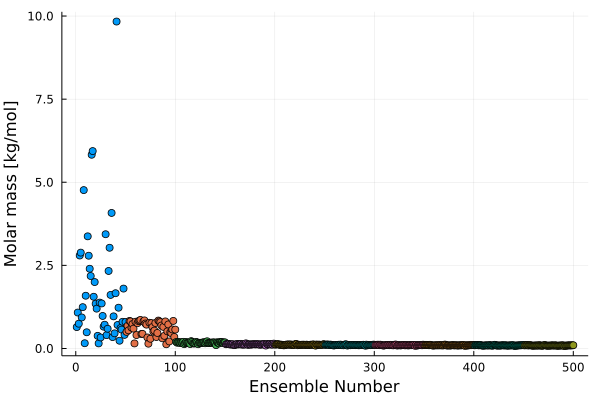
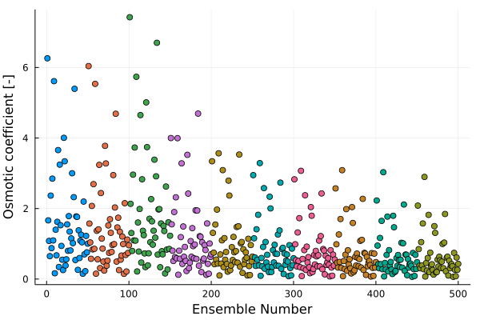
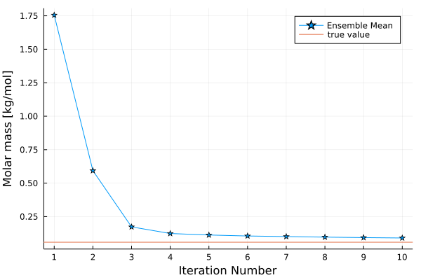
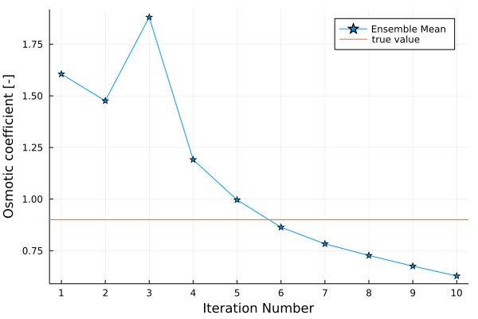

Aerosol Activation Example
Overview
This example is based on AerosolActivation module which is a part of the CloudMicrophysics.jl package. The AerosolActivation module computes the total number and mass of aerosol particles that get activated and become cloud droplets, given the atmospheric conditions and the initial aerosol size distribution and properties. See the AerosolActivation module docs for derivation and description of all input parameters.
In this example we use the ensemble Kalman methods to learn two parameters that describe the chemical composition of aerosol particles based on the observed total number and mass of activated particles. The AerosolActivation model is used here in a "perfect model" setting, meaning that the observations are generated by the same module we are calibrating.
Prerequisites
The example depends on some standard Julia libraries, as well as the CliMA packages: EnsembleKalmanProcess.jl, CLIMAParameters.jl and CloudMicrophysics.jl. To ensure that all the dependencies are met start Julia using the Project.toml file provided in the example and run the Julia package manager to download all the dependecies.
Example
We begin by importing some standard Julia modules, the Ensemble Kalman Process modules, CLIMA Parameter modules and Aerosol Activation modules.
using Plots
using Distributions
using LinearAlgebra
using Random
rng_seed = 44
import EnsembleKalmanProcesses
const EKP = EnsembleKalmanProcesses
import CLIMAParameters
const CP = CLIMAParameters
struct EarthParameterSet <: CP.AbstractEarthParameterSet end
const param_set = EarthParameterSet()
import CloudMicrophysics
const AM = CloudMicrophysics.AerosolModel
const AA = CloudMicrophysics.AerosolActivation
import Thermodynamics
const TD = ThermodynamicsNext, we provide the information about the priors of the parameters we want to learn. We are calibrating two parameters decribing the aerosol properties - namely the aerosol molar mass and the osmotic coefficient.
parameter_names = ["molar_mass", "osmotic_coeff"]In this test we do know the parameter values. We use them to test the convergence of EKP for aerosol activation.
molar_mass_true = 0.058443
osmotic_coeff_true = 0.9
default_params = [molar_mass_true, osmotic_coeff_true]Both parameters have to be positive definite, therefore we define the constraints to be bounded below by zero.
c1 = EKP.ParameterDistributions.bounded_below(0.0)
c2 = EKP.ParameterDistributions.bounded_below(0.0)
constraints = [[c1], [c2]]We don't have any other prior knowledge about the calibrated parameters. Defining the prior distribution in the constrained space to be normal with the mean equal to zero and the standard deviation equal to one, ensures that the default parameter values are well within the assumed prior pdf.
d1 = EKP.ParameterDistributions.Parameterized(Distributions.Normal(0, 1))
d2 = EKP.ParameterDistributions.Parameterized(Distributions.Normal(0, 1))
distributions = [d1, d2]This concludes the setup of priors.
priors = EKP.ParameterDistributions.ParameterDistribution(distributions, constraints, parameter_names)Next we define the atmospheric conditions for which the calibration will take place, (air temperature in K, air pressure in Pa vertical velocity in m/s and vapor specific humidity assuming its saturated in kg/kg) This can be changed later to include more than one $(T, p, w)$ combination in the calibration process
T = 283.15
p = 1e5
w = 5.0
p_vs = TD.saturation_vapor_pressure(param_set, T, TD.Liquid())
q_vs = 1 / (1 - CP.Planet.molmass_ratio(param_set) * (p_vs - p) / p_vs)
q = TD.PhasePartition(q_vs, 0.0, 0.0)We also define the aerosol size distribution (lognormal, 1 mode) with (mean radius in m, geometric stdev, number concentration 1/m³). These can also be changed later to include different initial size distributions.
r_dry = 0.243e-6
stdev = 1.4
N = 100.0 * 1e6 # since 1/cm³ = 1e6 1/m³Finally, we define additional parameters that describe the aerosol properties. The chosen aerosol is sea salt.
dissoc_seasalt = 2.0
soluble_mass_frac_seasalt = 1.0
rho_seasalt = 2170.0;We define a wrapper function that runs the aerosol activation module with two input parameters that will be calibrated by EKP. The output observations are the number and mass of activated aerosol.
function run_activation_model(molar_mass_calibrated, osmotic_coeff_calibrated)
accum_mode_seasalt = AM.Mode_B(
r_dry,
stdev,
N,
(1.0,),
(soluble_mass_frac_seasalt,),
(osmotic_coeff_calibrated,),
(molar_mass_calibrated,),
(dissoc_seasalt,),
(rho_seasalt,),
1,
)
aerosol_distr = AM.AerosolDistribution((accum_mode_seasalt,))
N_act = AA.total_N_activated(param_set, aerosol_distr, T, p, w, q)
M_act = AA.total_M_activated(param_set, aerosol_distr, T, p, w, q)
return [N_act, M_act]
endThis example is run in a "perfect model setting", meaning the model that we calibrate is also used to generate observations. We use the total number and mass of activated aerosol particles as our observational data.
observation_data_names = ["N_act", "M_act"];We generate artificial truth samples based on the default values of parameters we are calibrating.
n_samples = 10
G_t = run_activation_model(molar_mass_true, osmotic_coeff_true)
y_t = zeros(length(G_t), n_samples)
Γy = convert(Array, LinearAlgebra.Diagonal([0.01 * G_t[1], 0.01 * G_t[2]]))
μ = zeros(length(G_t));And add noise to the generated truth sample.
for i in 1:n_samples
y_t[:, i] = G_t .+ rand(Distributions.MvNormal(μ, Γy))
end
truth_array = EKP.Observations.Observation(y_t, Γy, observation_data_names)One could try for the truth to be a mean of the generated array. Or do the calibration for all individual truth samples and then compute the mean of calibrated parameters. For now we are just taking one truth array member.
truth_sample = truth_array.samples[1];We use 50 ensemble members and do 10 iterations.
N_ens = 50
N_iter = 10
initial_par = EKP.construct_initial_ensemble(priors, N_ens; rng_seed)
ekiobj = EKP.EnsembleKalmanProcess(initial_par, truth_sample, truth_array.obs_noise_cov, EKP.Inversion(), Δt = 1)Finally, we can run the Ensemble Kalman Process calibration.
ϕ_n_values = []
for n in 1:N_iter
θ_n = EKP.get_u_final(ekiobj)
ϕ_n = mapslices(x -> EKP.ParameterDistributions.transform_unconstrained_to_constrained(priors, x), θ_n; dims = 1)
G_n = [run_activation_model(ϕ_n[:, i]...) for i in 1:N_ens]
G_ens = hcat(G_n...)
EKP.update_ensemble!(ekiobj, G_ens)
global ϕ_n_values = vcat(ϕ_n_values, [ϕ_n])
endWe define some simple functions for plotting the data.
function plot_ensemble_scatter(id)
ensemble_member = 1:N_ens
if id == 1
ylabel = "Molar mass [kg/mol]"
filename = "molar_mass_scatter.svg"
end
if id == 2
ylabel = "Osmotic coefficient [-]"
filename = "osmotic_coeff_scatter.svg"
end
plot(
ensemble_member,
ϕ_n_values[1][id, 1:N_ens],
seriestype = :scatter,
xlabel = "Ensemble Number",
ylabel = ylabel,
legend = false,
)
for it in 2:N_iter
plot!(ensemble_member .+ ((it - 1) * 50), ϕ_n_values[it][id, 1:N_ens], seriestype = :scatter, legend = false)
end
current()
savefig(filename)
end
function plot_ensemble_means(id)
number_of_iters = 1:N_iter
means = zeros(N_iter)
for it in 1:N_iter
means[it] = mean(ϕ_n_values[it][id, 1:N_ens])
end
if id == 1
ylabel = "Molar mass [kg/mol]"
filename = "molar_mass_average.svg"
end
if id == 2
ylabel = "Osmotic coefficient [-]"
filename = "osmotic_coeff_average.svg"
end
plot(
number_of_iters,
means,
markershape = :star5,
xticks = number_of_iters,
xlabel = "Iteration Number",
ylabel = ylabel,
label = "Ensemble Mean",
)
hline!([default_params[id]], label = "true value")
savefig(filename)
endWe plot the ensemble members and the ensemble mean for the molar mass and osmotic coefficient.
plot_ensemble_scatter(1)
plot_ensemble_means(1)
plot_ensemble_scatter(2)
plot_ensemble_means(2)   
Finally, we test that the parameter values obtained via EnsembleKalmanProcesses.jl are close to the known true parameter values.
molar_mass_ekp = round(mean(ϕ_n_values[N_iter][1, 1:N_ens]), digits = 6)
osmotic_coeff_ekp = round(mean(ϕ_n_values[N_iter][2, 1:N_ens]), digits = 6)
println("Molar mass [kg/mol]: ", molar_mass_ekp, " vs ", molar_mass_true)
println("Osmotic coefficient [-]: ", osmotic_coeff_ekp, " vs ", osmotic_coeff_true)Molar mass [kg/mol]: 0.090282 vs 0.058443
Osmotic coefficient [-]: 0.627664 vs 0.9This page was generated using Literate.jl.